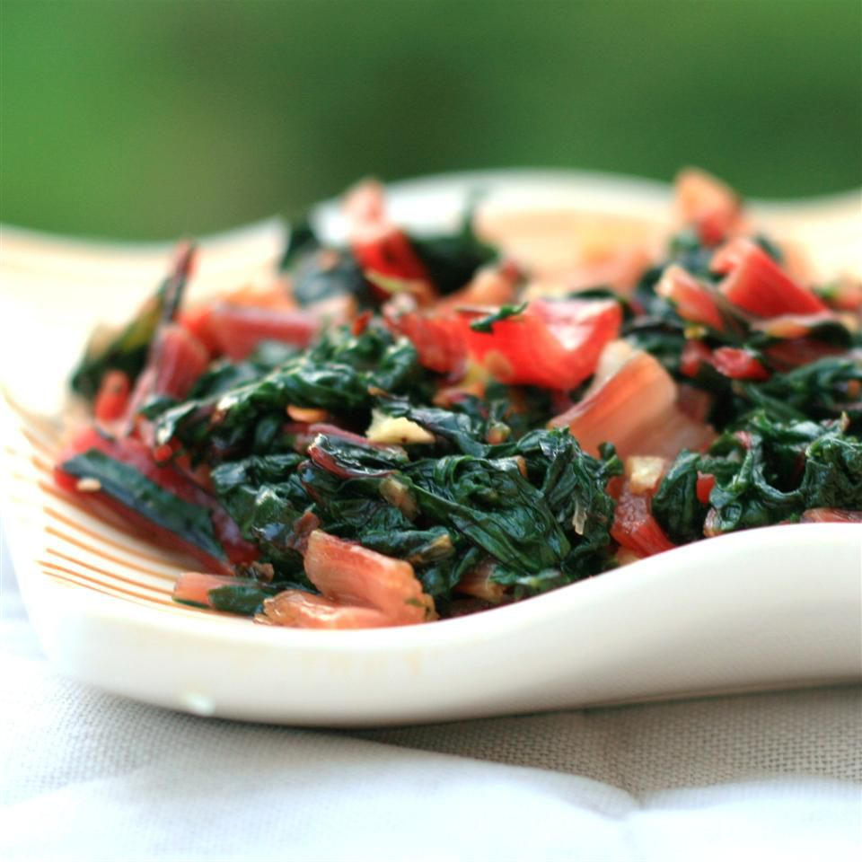

Italian Style Swiss Chard

This recipe for Italian-style Swiss chard has been in the family for
years. If you like garlic, this recipe is for you.
Ingredients
- 1 bunch Swiss chard
- 1 tablespoon salt
- 2 tablespoons olive oil
- 4 cloves garlic, coarsely chopped
- ⅛ teaspoon crushed red pepper flakes
- salt to taste
Steps
-
Wash Swiss chard and cut into 1-inch strips. Separate the thick, tough
stalk sections from the upper leafy strips.
-
Add 1 tablespoon salt to 1 cup water in a large saucepan; bring to a
boil. Add stalks and cook for 2 minutes. Stir in leafy strips. Cook
until stalks are fork-tender and leafy strips are wilted, about 6
minutes. Drain.
-
Heat oil, garlic, and red pepper flakes in a large skillet over medium
heat until aromatic, about 3 minutes. Add drained Swiss chard; cook and
stir for 2 minutes. Season with salt to taste.